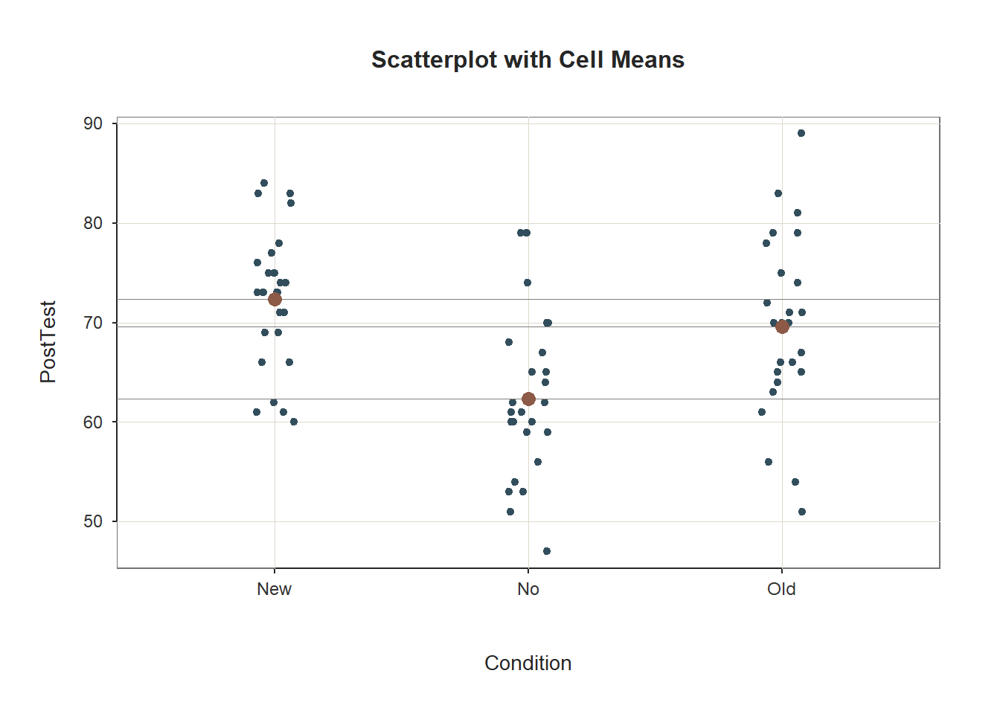

Chapter 34 Evaluating a Post-Test-Only with Two Comparison Groups Design Using One-Way ANOVA
In this chapter, we learn about the post-test-only with two comparison groups training evaluation design and how a one-way analysis of variance (ANOVA) can be used to analyze the data acquired from this design. Well begin with conceptual overviews of this training evaluation design and of the one-way ANOVA, and then well conclude with a tutorial.
34.1 Conceptual Overview
In this section, we will begin with a description of the post-test-only with two comparison groups training evaluation design. The section concludes with a review of the one-way analysis of variance (ANOVA), including discussions of statistical assumptions, omnibus F-test, post-hoc pairwise mean comparisons, statistical significance, and practical significance; the section wraps up with a sample-write up of a one-way ANOVA used to evaluate data from a post-test-only with two comparison groups training evaluation design.
34.1.1 Review of Post-Test-Only with Two Comparison Groups Design
In a post-test-only with two comparison groups training evaluation design (i.e., research design), employees are assigned (randomly or non-randomly) to either a treatment group (e.g., new training program), or one of two comparison groups (e.g., old training program and control group), and every participating employee is assessed on selected training outcomes (i.e., measures) after the training has concluded. If random assignment to groups is used, then a post-test-only with two comparison groups design is considered experimental. Conversely, if non-random assignment to groups is used, then the design is considered quasi-experimental. Regardless of whether random or non-random assignment is used, a one-way analysis of variance (ANOVA) can be used to analyze the data from a post-test-only with two comparison groups design, provided key statistical assumptions are satisfied.
Like any evaluation design, there are limitations to the inferences and conclusions we can draw from a post-test-only two comparison groups design. As a strength, this design includes two comparison groups, and if coupled with random assignment to groups, then the design qualifies as a true experimental design. With that being said, if we use non-random assignment to the different groups, then we are less likely to have equivalent groups of individuals who enter each group, which may bias how they engage in the demands of their respective group and how they complete the outcome measures. Further, because this design lacks a pre-test (i.e., assessment of initial performance on the outcome measures), we cannot be confident that employees in the three groups started in the same place with respect to the outcome(s) we might measure at post-test. Consequently, any differences we observe between the three groups on a post-test outcome measure may reflect pre-existing differences meaning, the training may not have caused the differences that are apparent at post-test.
34.1.2 Review of One-Way ANOVA
Analysis of variance (ANOVA) is part of a family of analyses aimed at comparing means, which includes one-way ANOVA, repeated-measures ANOVA, factorial ANOVA, and mixed-factorial ANOVA. In general, an ANOVA is used to compare three or more means; however, it can be used to compare two means on a single factor but you might as well just use an independent-samples t-test if this is the case. When comparing means, an omnibus F-test is employed to determine whether there are any differences in means across the levels of the categorical (nominal, ordinal) predictor variable. In other words, with an ANOVA, we are attempting to reject the null hypothesis that that there are no mean differences across levels of the categorical predictor variable. It is important to remember, however, that the F-test is an omnibus test, which means that its p-value only indicates whether mean differences exist across two or more means and not where those specific differences in means exist. Typically, post-hoc pairwise comparison tests can be used to uncover which specific pairs of levels (categories) show differences in means.
The one-way ANOVA refers to one of the most basic forms of ANOVA specifically, an ANOVA in which there is only a single categorical predictor variable and a continuous outcome variable. The term one-way indicates that there is just a single factor (i.e., predictor variable, independent variable). If we were to have two categorical predictor variables, then we could call the corresponding analysis a factorial ANOVA or more specifically a two-way ANOVA. A one-way ANOVA is employed to test the equality of two or more means on a continuous (interval, ratio) outcome variable (i.e., dependent variable) all at once by using information about the variances. For a one-way ANOVA the null hypothesis is typically that all means are equal, or rather, there are no differences between the means. More concretely, an F-test is used as an omnibus test for a one-way ANOVA. In essence, the F-test reflects the between-level (between-group, between-category) variance divided by the within-group variance. To calculate the degrees of freedom (df) for the numerator (between-group variance), we subtract 1 from the number of groups (df = k - 1). To calculate the df for the denominator (within-group variance), we subtract the number of groups from the number of people in the overall sample (df = n - k).
Note: In this chapter, we will focus on exclusively on applying a one-way ANOVA with balanced groups, where balanced groups means that each group (i.e., category) has the same number of independent cases. The default approach to calculating sum of squares in most R ANOVA functions is to use what is often referred to as Type I sum of squares. Type II and Type III sum of squares refer to the other approaches to calculating sum of squares for an ANOVA. Results are typically similar between Type I, Type II, and Type III approaches when the data are balanced across groups designated by the factors (i.e., predictor variables). To use Type II and Type III sum of squares, I recommend that you use the Anova function from the car package, which we will not cover in this tutorial. Because we are only considering considering a single between-subjects factor (i.e., one-way ANOVA) and have a balanced design, we wont concern ourselves with this distinction. If, however, you wish to extend the one-way ANOVA to a two-way ANOVA, I recommend checking out this link to the R-Bloggers site.
To illustrate the computational underpinnings of a one-way ANOVA, we can dive into some formulas for the grand mean, total variation, between-group variation, within-group variation, and the F-test. For the sake of simplicity, I am presenting formulas in which we will assume equal sample sizes for each level of the categorical predictor variable (i.e., equal sample sizes for each independent sample or group); this is often referred to as a balanced design, as noted above.
Grand Mean: The formula for the grand mean is as follows:
\(\overline{Y}_{..} = \frac{\sum Y_{ij}}{n}\)
where \(\overline{Y}_{..}\) is the grand mean, \(Y_{ij}\) represents a score on the outcome variable, and \(n\) is the total sample size.
Sum of Squares Between Groups (Between-Group Variation): The formula for the sum of squares between groups is as follows:
\(SS_{between} = \sum n_{j}(\overline{Y}_{.j} - \overline{Y}_{..})^{2}\)
where \(SS_{between}\) refers to the sum of squares between groups, \(n_{j}\) is the sample size for each group (i.e., level of the categorical predictor variable) assuming equal sample sizes, \(\overline{Y}_{.j}\) represents each groups mean on the continuous outcome variable, and \(\overline{Y}_{..}\) is the grand mean for the outcome variable (i.e., sample mean). In essence, \(SS_{between}\) represents variation between the group means. We can compute the variance between groups dividing \(SS_{between}\) by the between-groups degrees of freedom (df = k - 1), as shown below.
Variance Between Groups: The formula for the variance between groups is as follows:
\(s_{between}^{2} = \frac{SS_{between}}{k-1}\)
where \(s_{between}^{2}\) refers to the variance between groups, \(SS_{between}\) refers to the sum of squares between groups, \(k\) is the number of levels (categories, groups) for the categorical predictor variable, and \(k-1\) is the between-groups df.
Sum of Squares Within Groups (Within-Group Variation): The formula for the sum of squares within groups is as follows:
\(SS_{within} = \sum \sum (Y_{ij} - Y_{.j})^{2}\)
where \(SS_{within}\) refers to the sum of squares within groups (or error variation), \(Y_{ij}\) represents a score on the continuous outcome variable, and \(Y_{.j}\) represents each groups mean. In essence, \(SS_{within}\) represents variation within the groups. We can compute the variance within groups by dividing \(SS_{within}\) by the within-groups degrees of freedom (df = n - k), as shown below.
Variance Within Groups: The formula for the variance within groups is as follows:
\(s_{within}^{2} = \frac{SS_{within}}{n-k}\)
where \(s_{within}^{2}\) refers to the variance within groups, \(SS_{within}\) refers to the sum of squares within groups, \(n\) is the total sample size, \(k\) is the the number of groups (i.e., levels of the categorical predictor variable), and \(n-k\) is the within-groups df.
F-value: We can compute the F-value associated with the omnibus tests of means using the following formula:
\(F = \frac{s_{between}^{2}}{s_{within}^{2}}\)
where \(F\) is the F-test value, \(s_{between}^{2}\) is the variance between groups, and \(s_{within}^{2}\) is the variance within groups.
34.1.2.1 Post-Hoc Pairwise Mean Comparison Tests
As a reminder, the F-test indicates whether differences between the group means exist, but it doesnt indicate which specific pairs of groups differ with respect to their means. Thus, we use post-hoc pairwise mean comparison tests to evaluate which groups have (or do not have) significantly different means and the direction of those differences. Post-hoc tests like Tukeys test and Fishers test help us account for what is called family-wise error, where family-wise error refers to the increased likelihood of making Type I errors (i.e., finding something that doesnt really exist in the population; false positive) because we are running multiple pairwise comparisons and may capitalize on chance. Other tests like Dunnetts C are useful when the assumption of equal variances cannot be met. Essentially, the post-hoc pairwise mean comparison tests are independent-samples t-tests that account for the fact that we are making multiple comparisons, resulting in adjustments to the associated p-values.
34.1.2.2 Statistical Assumptions
The statistical assumptions that should be met prior to running and/or interpreting estimates from a simple linear regression model include:
- The outcome (dependent, response) variable has a univariate normal distribution in each of the two or more underlying populations (e.g., samples, groups, conditions), which correspond to the two or more categories (levels, groups) of the predictor (independent, explanatory) variable;
- The variances of the outcome (dependent, response) variable are equal across the two or more populations (e.g., levels, groups, categories), which is often called the equality of variances or homogeneity of variances assumption.
34.1.2.3 Statistical Significance
As noted above, for a one-way ANOVA, we use an omnibus F-test and associated p-value to test whether there are statistical significant differences across groups means. Using null hypothesis significance testing (NHST), we interpret a p-value that is less than .05 (or whatever two- or one-tailed alpha level we set) to meet the standard for statistical significance, meaning that we reject the null hypothesis that the differences between the two or means are equal to zero. In other words, if the p-value is less than .05, we conclude that there are statistically significant differences across the group means. In contrast, if the p-value is equal to or greater than .05, then we fail to reject the null hypothesis that there are differences across the two or more means.
If our omnibus F-test is found to be statistical significant, then we will typically move ahead by performing post-hoc pairwise comparison tests (e.g., Tukeys test, Fishers test, Dunnetts C) and examine the p-value associated with each pairwise comparison test. We interpret a p-value that is less than .05 (or whatever two- or one-tailed alpha level we set) to meet the standard for statistical significance, meaning that we reject the null hypothesis that the difference between the two means is equal to zero. In other words, if the p-value is less than .05, we conclude that the two means differ from each other to a statistically significant extent. In contrast, if the p-value is equal to or greater than .05, then we fail to reject the null hypothesis that the difference between the two means is equal to zero. As noted above, typically, the pairwise comparison tests adjust the p-values for family-wise error to reduce the likelihood of making Type I errors (i.e., false positives).
When setting an alpha threshold, such as the conventional two-tailed .05 level, sometimes the question comes up regarding whether borderline p-values signify significance or nonsignificance. For our purposes, lets be very strict in our application of the chosen alpha level. For example, if we set our alpha level at .05, p = .049 would be considered statistically significant, and p = .050 would be considered statistically nonsignificant.
34.1.2.4 Practical Significance
A significant omnibus F-test and associated p-value only tells us that the means in question differ to a statistically significant across groups (e.g., levels, categories). It does not, however, tell us about the magnitude of the difference across means or in other words, the practical significance. Fortunately, there are multiple model-level effect size indicators, like R2, \(\eta^{2}\), \(\omega^{2}\), and Cohens \(f\). All of these provide an indication of the amount of variance explained by the predictor variable in the outcome variable. In the table below, I provide some qualitative descriptors that we can apply when interpreting the magnitude of one of the effect size indicators. Please note that typically we only interpret practical significance when the F-test indicates statistical significance.
| R2 | \(\eta^2\) | \(\omega^2\) | Cohens f | Description |
|---|---|---|---|---|
| .01 | .01 | .01 | .10 | Small |
| .09 | .09 | .09 | .25 | Medium |
| .25 | .25 | .25 | .40 | Large |
After finding a statistically significant omnibus F-test, it is customary to then compute post-hoc pairwise comparisons between specific means to determine which pairs of means differ to a statistically significant extent. If a pair of means is found to show a statistically significant difference, then we will proceed forward with interpreting the magnitude of that difference, typically using an effect size indicator like Cohens d, which is the standardized mean difference. In essence, the Cohens d indicates the magnitude of the difference between means in standard deviation units. A d-value of .00 would indicate that there is no difference between the two means, while the following are some generally accepted qualitative-magnitude labels we can attach to the absolute value of d.
| Cohens d | Description |
|---|---|
| .20 | Small |
| .50 | Medium |
| .80 | Large |
34.1.2.5 Sample Write-Up
As part of a post-test-only with two comparison groups design, 75 employees were randomly assigned to one (and only one) of three following groups associated with our categorical (nominal, ordinal) predictor variable: no noise, some noise, and loud noise. A total of 25 participants were assigned to each group, resulting in a balanced design. For all employees, verbal fluency was assessed while they were exposed to one of the noise conditions, where verbal fluency serves as the continuous (interval, ratio) outcome variable. We applied a one-way ANOVA to determine whether verbal fluency differed across the levels of noise each group of employees experienced as part of our study. We found a significant omnibus F-test, which indicated that there were differences across the means in verbal fluency for the three noise conditions (F = 7.55, p = .03). The R2 associated with the model F-value was .12, which indicates that 12% of the variance in verbal fluency can be explained by the level of noise employees were exposed to. Given the significant omnibus F-test, we computed Tukeys tests to examine the post-hoc pairwise comparisons between each pair of verbal-fluency means. The mean verbal fluency score for the no-noise condition was 77.00 (SD = 3.20), 52.00 (SD = 3.10) for the some-noise condition, and 50.00 (SD = 3.10) for the loud-noise condition. Further, the pairwise comparisons indicated, as expected, that mean verbal fluency was significantly higher for the no-noise condition compared to the some-noise condition (\(M_{diff}\) = 15.00, adjusted p = .03) and loud noise condition (\(M_{diff}\) = 17.00, adjusted p = .02). We found that the standardized mean difference (Cohens d) for the two significant differences in means was .96 and .91, respectively, which both can considered large. Finally, a significant difference in means was not found when comparing verbal-fluency scores for the some-noise and no-noise conditions (\(M_{diff}\) = 2.00, adjusted p = .34).
34.2 Tutorial
This chapters tutorial demonstrates how to estimate a one-way ANOVA and post-hoc pairwise mean comparisons, test the associated statistical assumptions, and present the findings in writing and visually.
34.2.1 Video Tutorial
As usual, you have the choice to follow along with the written tutorial in this chapter or to watch the video tutorial below.
Link to video tutorial: https://youtu.be/e6oVV1ynfWo
34.2.2 Functions & Packages Introduced
| Function | Package |
|---|---|
Plot |
lessR |
tapply |
base R |
shapiro.test |
base R |
leveneTest |
car |
ANOVA |
lessR |
cohen.d |
effsize |
34.2.3 Initial Steps
If you havent already, save the file called TrainingEvaluation_ThreeGroupPost.csv into a folder that you will subsequently set as your working directory. Your working directory will likely be different than the one shown below (i.e., "H:/RWorkshop"). As a reminder, you can access all of the data files referenced in this book by downloading them as a compressed (zipped) folder from the my GitHub site: https://github.com/davidcaughlin/R-Tutorial-Data-Files; once youve followed the link to GitHub, just click Code (or Download) followed by Download ZIP, which will download all of the data files referenced in this book. For the sake of parsimony, I recommend downloading all of the data files into the same folder on your computer, which will allow you to set that same folder as your working directory for each of the chapters in this book.
Next, using the setwd function, set your working directory to the folder in which you saved the data file for this chapter. Alternatively, you can manually set your working directory folder in your drop-down menus by going to Session > Set Working Directory > Choose Directory. Be sure to create a new R script file (.R) or update an existing R script file so that you can save your script and annotations. If you need refreshers on how to set your working directory and how to create and save an R script, please refer to Setting a Working Directory and Creating & Saving an R Script.
# Set your working directory
setwd("H:/RWorkshop")Next, read in the .csv data file called TrainingEvaluation_ThreeGroupPost.csv using your choice of read function. In this example, I use the read_csv function from the readr package (Wickham, Hester, and Bryan 2021). If you choose to use the read_csv function, be sure that you have installed and accessed the readr package using the install.packages and library functions. Note: You dont need to install a package every time you wish to access it; in general, I would recommend updating a package installation once ever 1-3 months. For refreshers on installing packages and reading data into R, please refer to Packages and Reading Data into R.
# Install readr package if you haven't already
# [Note: You don't need to install a package every
# time you wish to access it]
install.packages("readr")# Access readr package
library(readr)
# Read data and name data frame (tibble) object
td <- read_csv("TrainingEvaluation_ThreeGroupPost.csv")## Rows: 75 Columns: 3## -- Column specification -----------------------------------------------------------------------------------------------------------------------
## Delimiter: ","
## chr (1): Condition
## dbl (2): EmpID, PostTest##
## i Use `spec()` to retrieve the full column specification for this data.
## i Specify the column types or set `show_col_types = FALSE` to quiet this message.# Print the names of the variables in the data frame (tibble) objects
names(td)## [1] "EmpID" "Condition" "PostTest"# View variable type for each variable in data frame
str(td)## spec_tbl_df [75 x 3] (S3: spec_tbl_df/tbl_df/tbl/data.frame)
## $ EmpID : num [1:75] 1 2 3 4 5 6 7 8 9 10 ...
## $ Condition: chr [1:75] "No" "No" "No" "No" ...
## $ PostTest : num [1:75] 74 65 62 68 70 61 79 67 79 59 ...
## - attr(*, "spec")=
## .. cols(
## .. EmpID = col_double(),
## .. Condition = col_character(),
## .. PostTest = col_double()
## .. )
## - attr(*, "problems")=<externalptr># View first 6 rows of data frame
head(td)## # A tibble: 6 x 3
## EmpID Condition PostTest
## <dbl> <chr> <dbl>
## 1 1 No 74
## 2 2 No 65
## 3 3 No 62
## 4 4 No 68
## 5 5 No 70
## 6 6 No 61There are 75 cases (i.e., employees) and 3 variables in the td data frame: EmpID (unique identifier for employees), Condition (training condition: New = new training program, Old = old training program, No = no training program), and PostTest (post-training scores on training assessment, ranging from 1-100). Regarding participation in the training conditions, 25 employees participated in each condition, with no employee participating in more than one condition; this means that we have a balanced design. Per the output of the str (structure) function above, all of the variables except for Condition are of type integer (continuous: interval/ratio), and Condition is of type character (nominal/categorical).
34.2.4 Test Statistical Assumptions
Prior to estimating and interpreting the one-way ANOVA, lets generate a VBS (violin-box-scatter) plot to visualize the statistical assumptions regarding the outcome variable having a univariate normal distribution in each of the three training conditions and the variances of the outcome variable being approximately equal across the three conditions. To do so, well use the Plot function from the lessR package (Gerbing, Business, and University 2021). If you havent already, install and access the lessR package using the install.packages and library functions, respectively.
# Install package
install.packages("lessR")# Access package
library(lessR)Type the name of the Plot function. As the first argument within the function, type the name of the outcome variable (PostTest). As the second argument, type data= followed by the name of the data frame (td). As the third argument, type by1= followed by the name of the grouping variable (Condition), as this will create the trellis (lattice) structure wherein three VBS plots will be created (one for each independent group).
# VBS plots of the PostTest distributions by Condition
Plot(PostTest, data=td, by1=Condition)## [Trellis graphics from Deepayan Sarkar's lattice package]
## >>> Suggestions
## Plot(PostTest, out_cut=2, fences=TRUE, vbs_mean=TRUE) # Label two outliers ...
## Plot(PostTest, box_adj=TRUE) # Adjust boxplot whiskers for asymmetry
## ANOVA(PostTest ~ Condition) # add the data parameter if not d## PostTest
## - by levels of -
## Condition
##
## n miss mean sd min mdn max
## New 25 0 72.36 6.98 60.00 73.00 84.00
## No 25 0 62.36 8.09 47.00 61.00 79.00
## Old 25 0 69.60 9.11 51.00 70.00 89.00
##
##
## Max Dupli-
## Level cations Values
## ------------------------------
## New 4 73
## No 3 60
## Old 3 70
##
##
## Parameter values (can be manually set)
## -------------------------------------------------------
## size: 0.55 size of plotted points
## out_size: 0.80 size of plotted outlier points
## jitter_y: 1.00 random vertical movement of points
## jitter_x: 0.28 random horizontal movement of points
## bw: 3.43 set bandwidth higher for smoother edgesBased on the output from the Plot function, note that (at least visually) the three distributions seem to be roughly normally distributed, and the the variances appear to be approximately equal. These are by no means stringent tests of the statistical assumptions, but they provide us with a cursory understanding of the shape of the distributions and the variances. If we were to see evidence of non-normality across the conditions, then we might (a) transform the outcome variable to achieve normality (if possible), or (b) apply a nonparametric analysis like the Kruskal-Wallis rank sum test.
We can also go a step further by testing the normal distribution and equal variances statistical assumptions using statistical tests.
Assumption of Normally Distributed Outcome Variable Scores for Each Level of Predictor Variable: As a reminder, the first statistical assumption is that the outcome variable has a univariate normal distribution in each of the underlying populations (e.g., groups, conditions), which correspond to the levels of the categorical predictor variable. The Shapiro-Wilk normality test can be used to test the null hypothesis that a distribution is normal; if the p-value associated with the test statistic (W) is less than the conventional alpha level of .05, then we would reject the null hypothesis and assume that the distribution is not normal. If, however, we fail to reject the null hypothesis, then we do not have statistical evidence that the distribution is anything other than normal. In other words, if the p-value is equal to or greater than our alpha level (.05), then we can assume the variable is normally distributed.
To compute the Shapiro-Wilk normality test, we will use the shapiro.test function from base R. Because we need to test the assumption of normality of the outcome variable (PostTest) for all three levels of the predictor variable (Condition), we also need to use the tapply function from base R. The tapply function can be quite useful, as it allows us to apply a function to a variable for each level of another categorical variable. To begin, type the name of the tapply function. As the first argument, type the name of the data frame (td), followed by the $ symbol and the name of the outcome variable (PostTest). As the second argument, type the name of the data frame (td), followed by the $ symbol and the name of the categorical predictor variable (Condition). Finally, as the third argument, type the name of the shapiro.test function.
# Compute Shapiro-Wilk normality test for normal distributions
tapply(td$PostTest, td$Condition, shapiro.test)## $New
##
## Shapiro-Wilk normality test
##
## data: X[[i]]
## W = 0.95019, p-value = 0.2533
##
##
## $No
##
## Shapiro-Wilk normality test
##
## data: X[[i]]
## W = 0.97029, p-value = 0.6525
##
##
## $Old
##
## Shapiro-Wilk normality test
##
## data: X[[i]]
## W = 0.98644, p-value = 0.977In the output, we can see that the PostTest variable is normally distributed for those in the New training condition (W = .95019, p = .2533), the Old training condition (W = .98644, p = .977), and the No training condition (W = .97029, p = .6525). That is, because the p-values were each equal to or greater than .05, we failed to reject the null hypothesis that the distributions of outcome variable scores were normal. Thus, we have statistical support for having met the first assumption.
Assumption of Equal Variances (Homogeneity of Variances): As for the equal variances assumption, Levenes test (i.e., homogeneity of variances test) is commonly used. The null hypothesis of this test is that the variances of the outcome variable are equal across levels of the categorical predictor variable. Thus, if the p-value is less than the conventional alpha level of .05, then we reject the null hypothesis and assume the variances are different. If, however, the p-value is equal to or less than .05, then we fail to reject the null hypothesis and assume that the variances are equal (i.e., variances are homogeneous).
To test the equality (homogeneity) of variances assumption, we will use the leveneTest function from the car package. More than likely the car package is already installed on your computer, as many other packages are dependent on it. That being said, you may still need to install the package prior to accessing it using the library function.
# Install package
install.packages("car")# Access package
library(car)Type the name of the leveneTest function. As the first argument, specify the statistical model. To do so, type the name of the outcome (dependent) variable (PostTest) to the left of the ~ symbol and the name of the predictor (independent) variable (Condition) to the right of the ~ symbol. For the second argument, use data= to specify the name of the data frame (td).
# Compute Levene's test for equal variances
leveneTest(PostTest ~ Condition, data=td)## Levene's Test for Homogeneity of Variance (center = median)
## Df F value Pr(>F)
## group 2 0.6499 0.5251
## 72In the output, we see that the test is nonsignificant (F = .6499, p = .5251), which suggests that, based on this test, we have no reason to believe that the three variances are anything but equal. In other words, because the p-value for this test is equal to or greater than .05, we fail to reject the null hypothesis that the variances are equal. All in all, we found evidence to support that we met the two statistical assumptions necessary to proceed forward with estimating our one-way ANOVA.
34.2.5 Estimate One-Way ANOVA
There are different functions that can be used to run a one-way ANOVA in R. In this chapter, we will review how to run a one-way ANOVA using the ANOVA function from the lessR package, and if youre interested, in the chapter supplement I demonstrate how to carry out the same processes using the aov function from base R.
Using ANOVA function from the lessR package, we will evaluate whether the means on the post-test (PostTest) continuous outcome variable differ between levels of the Condition categorical predictor variable (New, Old, No); in other words, lets find out if we should treat the means as being different from one another.
A big advantage of using the ANOVA function from the lessR package to estimate a one-way ANOVA is that the function automatically generates descriptive statistics, the omnibus F-test and associated indicators of effect size (i.e., practical significance), and post-hoc pairwise comparisons.
If you havent already, install and access the lessR package using the install.packages and library functions, respectively.
# Install package
install.packages("lessR")# Access package
library(lessR)Now were ready to estimate a one-way ANOVA. To begin, type the name of the ANOVA function. As the first argument in the parentheses, specify the statistical model. To do so, type the name of the continuous outcome variable (PostTest) to the left of the ~ symbol and the name of the categorical predictor variable (Condition) to the right of the ~ symbol. For the second argument, use data= to specify the name of the data frame where the outcome and predictor variables are located (td).
# One-way ANOVA using ANOVA function from lessR
ANOVA(PostTest ~ Condition, data=td)
## BACKGROUND
##
## Response Variable: PostTest
##
## Factor Variable: Condition
## Levels: New No Old
##
## Number of cases (rows) of data: 75
## Number of cases retained for analysis: 75
##
##
## DESCRIPTIVE STATISTICS
##
## n mean sd min max
## New 25 72.36 6.98 60.00 84.00
## No 25 62.36 8.09 47.00 79.00
## Old 25 69.60 9.11 51.00 89.00
##
## Grand Mean: 68.107
##
##
## BASIC ANALYSIS
##
## df Sum Sq Mean Sq F-value p-value
## Condition 2 1333.63 666.81 10.16 0.0001
## Residuals 72 4727.52 65.66
##
##
## R Squared: 0.22
## R Sq Adjusted: 0.20
## Omega Squared: 0.20
##
## Cohen's f: 0.49
##
##
## TUKEY MULTIPLE COMPARISONS OF MEANS
##
## Family-wise Confidence Level:
## -----------------------------------
## diff lwr upr p adj
## No-New -10.00 -15.48 -4.52 0.00
## Old-New -2.76 -8.24 2.72 0.45
## Old-No 7.24 1.76 12.72 0.01
##
##
## RESIDUALS
##
## Fitted Values, Residuals, Standardized Residuals
## [sorted by Standardized Residuals, ignoring + or - sign]
## [res_rows = 20, out of 75 cases (rows) of data, or res_rows="all"]
## -----------------------------------------------
## Condition PostTest fitted residual z-resid
## 75 Old 89.00 69.60 19.40 2.44
## 57 Old 51.00 69.60 -18.60 -2.34
## 7 No 79.00 62.36 16.64 2.10
## 9 No 79.00 62.36 16.64 2.10
## 64 Old 54.00 69.60 -15.60 -1.96
## 25 No 47.00 62.36 -15.36 -1.93
## 73 Old 56.00 69.60 -13.60 -1.71
## 60 Old 83.00 69.60 13.40 1.69
## 32 New 60.00 72.36 -12.36 -1.56
## 29 New 84.00 72.36 11.64 1.47
## 1 No 74.00 62.36 11.64 1.47
## 56 Old 81.00 69.60 11.40 1.44
## 33 New 61.00 72.36 -11.36 -1.43
## 42 New 61.00 72.36 -11.36 -1.43
## 20 No 51.00 62.36 -11.36 -1.43
## 35 New 83.00 72.36 10.64 1.34
## 43 New 83.00 72.36 10.64 1.34
## 28 New 62.00 72.36 -10.36 -1.30
## 41 New 82.00 72.36 9.64 1.21
## 51 Old 79.00 69.60 9.40 1.18
##
##
## ----------------------------------------
## Plot 1: Scatterplot with Cell Means
## Plot 2: 95% family-wise confidence level
## ----------------------------------------As you can see in the output, the ANOVA function provides background information about your variables, descriptive statistics, an omnibus statistical significance test of the mean comparison, post-hoc pairwise mean comparisons, and indicators of practical significance. In addition, the default data visualizations include a scatterplot with the cell (group) means and a chart with mean differences between conditions presented.
Background: The Background section provides information about the name of the data frame, the name of the response (i.e., outcome) variable, the factor (i.e., categorical predictor) variable and its levels (i.e., conditions, groups), and the number of cases.
Descriptive Statistics: The Descriptive Statistics section includes basic descriptive statistics about the sample. In the output, we can see that that there are 25 employees in each condition (n = 25), and descriptively, the mean PostTest score for the New training condition is 72.36 (SD = 6.98), the mean PostTest score for the Old training condition is 69.60 (SD = 9.11), and the mean PostTest score for the No training condition is 62.36 (SD = 8.09). The grand mean (i.e., overall mean for the entire sample) is 68.107. Thus, descriptively we can see that the condition means are not the same, but the question remains whether these means are different from one another to a statistically significant extent.
Basic Analysis: In the Basic Analysis section of the output, you will find the statistical test of the null hypothesis (i.e., the means are equal). This is called an omnibus test because we are testing whether or not their is evidence that we should treat all means as equal. First, in the Summary Table, take a look at the line prefaced with Condition; in this line, you will find the degrees of freedom (df), the sum of squares (Sum Sq), and the mean square (Mean Sq) between groups/conditions; in addition, you will find the omnibus F-value and its associated p-value. The F-value and its associated p-value reflect the null hypothesis significance test of the means being equal, and because the p-value is less than the conventional two-tailed alpha of .05, we reject the null hypothesis that means are equal (F = 10.16, p < .001); meaning, we have evidence that at least two of the means differ from one another to a statistically significant extent. But which ones? To answer this question, we will need to look at the pairwise mean comparison tests later in the output. Next, look at the Association and Effect Size table. The (unadjusted) R-squared (R2) value indicates the extent to which the predictor variable explains variance in the outcome variable in this sample; if you multiply the value by 100, you get a percentage. In this case, we find that 22% of the variance in PostTest scores is explained by the different levels of the Condition variable (i.e., New, Old, No) for this example. The adjusted R2 value, however, is an indicator of the magnitude of the association in the underlying population (as opposed to specifically for this sample), and here we see that the adjusted R2 value is .20 (or 20%). We also find information about other effect-size indicators, including omega-squared (\(\omega\)2) and Cohens f. \(\omega\)2 is a population-level indicator of effect size like the adjusted R2 value, and like the adjusted R2 value will tend to be smaller. Some functions compute an effect size indicator called eta-squared (\(\eta\)2), which is equivalent to an unadjusted R2 value in this context. Finally, Cohens f focuses not on the variance explained (i.e., the association) but on the magnitude of the differences in means between groups/conditions. By most standards, these effect sizes would be considered to be a medium-to-large or large in magnitude; remember, these effect-size indicators correspond to the omnibus F-test. In the table below, I provide conventional rules of thumb for qualitatively interpreting the magnitude of R2 (adjusted or unadjusted) and Cohens f; I suggest picking one and using it consistently. Finally, please note that typically we only interpret practical significance when a difference has been found to be statistically significant.
| R2 | \(\eta^2\) | \(\omega^2\) | Cohens f | Description |
|---|---|---|---|---|
| .01 | .01 | .01 | .10 | Small |
| .09 | .09 | .09 | .25 | Medium |
| .25 | .25 | .25 | .40 | Large |
Tukey Multiple Comparisons of Means: Recall that based on the omnibus F-test above, we found evidence that the group means were not equal; in other words, the p-value associated with your F-value indicated the means differed significantly across the groups. Because the omnibus F-test indicated statistical significance at the model level, we should proceed forward with post-hoc pairwise mean comparison tests, such as Tukeys test. If the omnibus test had not been statistically significant, then we would not proceed forward with interpreting the post-hoc pairwise mean comparison tests. In the Tukey Multiple Comparisons of Means section, we find the pairwise mean comparisons corrected for family-wise error based on Tukeys approach. Family-wise error refers to instances in which we run multiple statistical tests, which means that we may be more likely to capitalize on chance when searching for statistically significant finds. When tests are adjusted for family-wise error, the p-values (or confidence intervals) are corrected (i.e., penalized) for the fact that multiple statistical tests were run, thereby increasing the threshold for finding a statistically significant result. Each row in the pairwise-comparison table in the output shows the raw difference (i.e., diff) in means between the two specified groups, such that the first group mean is subtracted from the second group mean listed. Next, the lower (i.e., lwr) and upper (i.e., upr) 95% confidence interval limits are presented. Finally, the adjusted p-value is presented (i.e., p adj). In our output, we find that employees who participated in the No training condition scored, on average, 10.00 points lower (-10.00) on their post-test (PostTest) assessment than employees who participated in the New training condition, which is a statistically significant difference (p-adjusted < .01, 95% CI[-15.48, -4.52]). Similarly, employees who participated in the Old training condition scored, on average, 7.24 points higher on their post-test (PostTest) assessment than employees who participated in the No training condition (p-adjusted = .01, 95% CI[1.76, 12.72]). Note that, as evidenced by the 95% confidence intervals, the uncertainty around the mean difference between the Old and No training conditions appears to be notably greater than the uncertainty around the mean difference between the New and No training conditions. Finally, we find that the mean difference of -2.76 between the New and the Old training conditions is not statistically significant (p-adjusted = .45, 95% CI[-8.24, 2.72]).
Note that the ANOVA function from lessR does not provide effect size estimates for the post-hoc pairwise mean comparisons, so if you would like those, you can do the following.
Effect Sizes of Significant Post-Hoc Pairwise Mean Comparisons: There are various ways that we could go about computing an effect size such as Cohens d for those statistically significant post-hoc pairwise mean comparisons. In the post-hoc pairwise mean comparisons section of the output, we identified that the New and Old training conditions resulted in significantly higher post-training assessment (PostTest) scores compared to the No training condition. The question then becomes: How much better than the No training condition are the New and Old training conditions?
To compute Cohens d as an estimate of practical significance we will use the cohen.d function from the effsize package. If you havent already, install the effsize package. Make sure to access the package using the library function.
# Install package
install.packages("effsize")# Access package
library(effsize)As the first argument in the cohen.d function parentheses, type the name of the continuous outcome variable (PostTest) to the left of the ~ symbol and the name of the categorical predictor variable (Condition) to the right of the ~ symbol. For the second argument, we are going to apply the subset function from base R after data= to indicate that we only want to run a subset of our data frame. The subset function is a simpler version of the filter function from dplyr. Why are we doing this? The cohen.d function will only allow predictor variables with two levels, and our Condition variable has three levels: New, Old, and No. After data=, type subset, and within the subset function parentheses, enter the name of the data frame (td) as the first argument and a conditional statement that removes one of the three predictor variable levels (Condition!="Old"); in this first example, we remove the Old level so that we can compare just the New and Old conditions. Back to the cohen.d function, as the third argument, type paired=FALSE to indicate that the data are not paired (i.e., the data are not dependent).
# Compute Cohen's d for New and No condition means
cohen.d(PostTest ~ Condition, data=subset(td, Condition!="Old"), paired=FALSE)##
## Cohen's d
##
## d estimate: 1.324165 (large)
## 95 percent confidence interval:
## lower upper
## 0.6962342 1.9520949The output indicates that Cohens d is 1.324, which would be considered large by conventional cutoff standards (see table below).
| Cohens d | Description |
|---|---|
| .20 | Small |
| .50 | Medium |
| .80 | Large |
Lets repeat the same process as above, except this time we will focus on the Old and No levels of the Condition predictor variable by removing the level called New.
# Compute Cohen's d for Old and No condition means
cohen.d(PostTest ~ Condition, data=subset(td, Condition!="New"), paired=FALSE)##
## Cohen's d
##
## d estimate: -0.8407151 (large)
## 95 percent confidence interval:
## lower upper
## -1.4339989 -0.2474312The output indicates that Cohens d is .841, which is large but not as large as the Cohens d we saw when comparing the PostTest means for the New and No training conditions. Note: Cohens d was actually negative (-.841), but typically we just report the absolute value in this context, as the negative or positive sign of a Cohens d simply indicates which mean was subtracted from the other mean; and reversing this order would result in the opposite sign.
Sample Write-Up: To evaluate the effectiveness of a new training program, we applied a post-test-only with two comparison groups training evaluation design. In total, 25 employees participated in the new training program, 25 employees participated in the old training program, and 25 employees did not participate in a training program. After completing their respective training conditions, employees were assessed on the knowledge they acquired during training, where scores could range from 1-100. We found that post-training assessments differed across training conditions to a statistically significant extent (F = 10.16, p < .001); together, participation in the different training conditions explained 20% of the variability in post-training assessment scores (R2 = .22; R2adjusted = .20). Results of follow-up tests indicated that employees who participated in the new training program performed, on average, 10.00 points better on their post-training assessment than those who did not participate in a training program (padjusted < .01, 95% CI[4.52, 15.48]), which was a large difference (d = 1.324). Further, employees who participated in the old training program performed, on average, 7.24 points better on their post-training assessment than those who did not participate in a training program (padjusted < .01, 95% CI[1.76, 12.72]), which was a large difference (d = .841). Average post-training assessment scores were not found to differ to a statistically significant extent for those who participated in the new versus old training programs (Mdifference = 2.76, padjusted = .45, 95% CI[-8.24, 2.72]).
Note: When interpreting the results, I flipped the sign (+ vs.-) of some of the findings to make the interpretation more consistent. Feel free to do the same.
34.2.6 Visualize Results Using Bar Chart
When we find a statistically significant difference between two or more pairs of means based on an one-way ANOVA, we may want to present the means in a bar chart to facilitate storytelling. To do so, we will use the BarChart function from lessR. If you havent already, install and access the lessR package using the install.packages and library functions, respectively.
# Install package
install.packages("lessR")# Access package
library(lessR)Type the name of the BarChart function. As the first argument, type x= followed by the name of the categorical predictor variable (Condition). As the second argument, type y= followed by the name of the continuous outcome variable (PostTest). As the third argument, specify stat="mean" to request the application of the mean function to the PostTest variable based on the levels of the Condition variable. As the fourth argument, type data= followed by the name of the data frame object to which our predictor and outcome variables belong (td). As the fifth argument, use xlab= to provide the x-axis label ("Training Condition"). As the sixth argument, use ylab= to provide the y-axis label ("Post-Test Score").
# Create bar chart
BarChart(x=Condition, y=PostTest,
stat="mean",
data=td,
xlab="Training Condition",
ylab="Post-Test Score")## PostTest
## - by levels of -
## Condition
##
## n miss mean sd min mdn max
## New 25 0 72.36 6.98 60.00 73.00 84.00
## No 25 0 62.36 8.09 47.00 61.00 79.00
## Old 25 0 69.60 9.11 51.00 70.00 89.00## >>> Suggestions
## Plot(PostTest, Condition) # lollipop plot
##
##
## Data for: PostTest
## -------------------
## New No Old
## 72.36 62.36 69.6034.2.7 Summary
In this chapter, we learned how to estimate a one-way ANOVA using the ANOVA function from the lessR package. We also learned how to test statistical assumptions, compute post-hoc pairwise mean comparisons, estimate an effect size for the omnibus test, and estimate effect sizes for the pairwise mean comparisons.
34.3 Chapter Supplement
In addition to the ANOVA function from the lessR package covered above, we can use the aov function from base R to estimate an one-way ANOVA. Because this function comes from base R, we do not need to install and access an additional package. In this supplement, you will also have an opportunity to learn how to make an APA (American Psychological Association) style table of the one-way ANOVA results.
34.3.1 Functions & Packages Introduced
| Function | Package |
|---|---|
aov |
base R |
summary |
base R |
anova_stats |
sjstats |
TukeyHSD |
base R |
plot |
base R |
mean |
base R |
cohen.d |
effsize |
apa.aov.table |
apaTables |
apa.1way.table |
apaTables |
apa.d.table |
apaTables |
34.3.2 Initial Steps
If required, please refer to the Initial Steps section from this chapter for more information on these initial steps.
# Set your working directory
setwd("H:/RWorkshop")# Install readr package if you haven't already
# [Note: You don't need to install a package every
# time you wish to access it]
install.packages("readr")# Access readr package
library(readr)
# Read data and name data frame (tibble) object
td <- read_csv("TrainingEvaluation_ThreeGroupPost.csv")## Rows: 75 Columns: 3## -- Column specification -----------------------------------------------------------------------------------------------------------------------
## Delimiter: ","
## chr (1): Condition
## dbl (2): EmpID, PostTest##
## i Use `spec()` to retrieve the full column specification for this data.
## i Specify the column types or set `show_col_types = FALSE` to quiet this message.# Print the names of the variables in the data frame (tibble) objects
names(td)## [1] "EmpID" "Condition" "PostTest"# View variable type for each variable in data frame
str(td)## spec_tbl_df [75 x 3] (S3: spec_tbl_df/tbl_df/tbl/data.frame)
## $ EmpID : num [1:75] 1 2 3 4 5 6 7 8 9 10 ...
## $ Condition: chr [1:75] "No" "No" "No" "No" ...
## $ PostTest : num [1:75] 74 65 62 68 70 61 79 67 79 59 ...
## - attr(*, "spec")=
## .. cols(
## .. EmpID = col_double(),
## .. Condition = col_character(),
## .. PostTest = col_double()
## .. )
## - attr(*, "problems")=<externalptr># View first 6 rows of data frame
head(td)## # A tibble: 6 x 3
## EmpID Condition PostTest
## <dbl> <chr> <dbl>
## 1 1 No 74
## 2 2 No 65
## 3 3 No 62
## 4 4 No 68
## 5 5 No 70
## 6 6 No 6134.3.3 aov Function from Base R
The aov function from base R offers another route for running a one-way ANOVA. Prior to using the aov function, it is advisable to perform statistical tests to give us a better understanding if we have satisfied the two statistical assumptions necessary to estimate and interpret a one-way ANOVA; rather than repeat those same diagnostics tests here, please refer to the Test Statistical Assumptions section to learn how to perform those tests.
Assuming we have satisfied the statistical assumptions, we are now ready to estimate the one-way ANOVA. To begin, come up with a name for the one-way ANOVA model that you are specifying; you can call this model object whatever youd like, and here I refer to it as model1. To the right of the model name, type the <- operator to indicate that you are assigning the one-way ANOVA model to the object. Next, to the right of the <- operator, type the name of the aov function from base R. As the first argument, type the name of the continuous outcome variable (PostTest) to the left of the ~ operator and the name of the categorical predictor variable (Condition) to the right of the ~ operator. For the second argument, use data= to specify the name of the data frame (td). On the next line, type the name of the summary function from base R, and as the sole argument, enter the name of the model object you created and named on the previous line.
# One-way ANOVA using aov function from base R
model1 <- aov(PostTest ~ Condition, data=td)
summary(model1)## Df Sum Sq Mean Sq F value Pr(>F)
## Condition 2 1334 666.8 10.16 0.00013 ***
## Residuals 72 4728 65.7
## ---
## Signif. codes: 0 '***' 0.001 '**' 0.01 '*' 0.05 '.' 0.1 ' ' 1Note that the aov output provides you with the results of the one-way ANOVA. In the output table, take a look at the line prefaced with Condition; in this line, you will find the degrees of freedom (df), the sum of squares (Sum Sq), and the mean square (Mean Sq) between groups/conditions; in addition, you will find the omnibus F-value and its associated p-value. The F-value and its associated p-value reflect the null hypothesis significance test of the means being equal, and because the p-value is less than the conventional two-tailed alpha of .05, we reject the null hypothesis that means are equal (F = 10.16, p = .00013); meaning, we have evidence that at least two of the means differ from one another to a statistically significant extent.
But how big is this effect? To assess the practical significance of a statistically significant effect, we will apply the anova_stats function from the sjstats package. If you havent already, install and access the sjstats package.
# Install package
install.packages("sjstats")# Access package
library(sjstats)Within the anova_stats function parentheses, enter the name of the object for the one-way ANOVA model you created (model1).
# Compute effect sizes for omnibus test
anova_stats(model1)## term | df | sumsq | meansq | statistic | p.value | etasq | partial.etasq | omegasq | partial.omegasq | epsilonsq | cohens.f | power
## --------------------------------------------------------------------------------------------------------------------------------------------
## Condition | 2 | 1333.627 | 666.813 | 10.156 | < .001 | 0.220 | 0.220 | 0.196 | 0.196 | 0.198 | 0.531 | 0.986
## Residuals | 72 | 4727.520 | 65.660 | | | | | | | | |In the output, we see the same model information regarding degrees of freed sum of squares, mean of squares, F-value, and p-value, but we also see estimates for effect-size indicators like eta-squared (\(\eta^2\)), omega-squared (\(\omega^2\)), and Cohens f. As a reminder, \(\eta^2\) will be equivalent to an unadjusted R2 value in this context, and \(\omega^2\) will be equivalent to an adjusted R2 value. Finally, unlike the aforementioned effect-size indicators, Cohens f focuses not on the variance explained (i.e., the association) but rather on the magnitude of the differences in means between groups. By most standards, these effect sizes would be considered to be a medium-large or large in magnitude; remember, these effect-size indicators correspond to the omnibus F-test. In the table below, I provide conventional rules of thumb for qualitatively interpreting the magnitude of these effect sizes. Please note that typically we only interpret practical significance when a difference has been found to be statistically significant.
| R2 | \(\eta^2\) | \(\omega^2\) | Cohens f | Description |
|---|---|---|---|---|
| .01 | .01 | .01 | .10 | Small |
| .09 | .09 | .09 | .25 | Medium |
| .25 | .25 | .25 | .40 | Large |
Based on the omnibus F-test we know that these means are not equivalent to one another, and we know that the effect is medium-large or large in magnitude. What we dont yet know is which pairs of means are significantly from one another and by how much. To answer this question, we will need to run some post-hoc pairwise comparison tests.
Tukey Multiple Comparisons of Means: Recall that based on the omnibus F-test above, we found evidence that the group means were not equal; in other words, the p-value associated with your F-value indicated a statistically significant finding. Because the omnibus test was statistically significant, we should proceed forward with post-hoc pairwise mean comparison tests, such as Tukeys test. If the omnibus test had not been statistically significant, then we would not proceed forward to interpret the post-hoc pairwise mean comparison tests.
To compute Tukeys test, we will use the TukeyHSD function from base R. First, come up with a name for the object that will contain the results of our Tukeys test. In this example, I call this model TukeyTest. Second, use the <- operator to indicate that youre creating a new object based on the results of the TukeyHSD function that you will write next. Third, type the name of the TukeyHSD function, and within the parentheses, enter the name of the one-way ANOVA model object that you specified above (model1). Finally, on the next line, type the name of the print function from base R, and enter the name of the TukeyTest object you created as the sole argument.
# Compute Tukey's test for pairwise mean comparisons
TukeyTest <- TukeyHSD(model1)
print(TukeyTest)## Tukey multiple comparisons of means
## 95% family-wise confidence level
##
## Fit: aov(formula = PostTest ~ Condition, data = td)
##
## $Condition
## diff lwr upr p adj
## No-New -10.00 -15.484798 -4.515202 0.0001234
## Old-New -2.76 -8.244798 2.724798 0.4545618
## Old-No 7.24 1.755202 12.724798 0.0064718In the output, we find the pairwise mean comparisons corrected for family-wise error based on Tukeys approach. Family-wise error refers to instances in which we run multiple statistical tests, which means that we may be more likely to capitalize on chance when searching for statistically significant finds. When tests are adjusted for family-wise error, the p-values (or confidence intervals) are corrected (i.e., penalized) for the fact that multiple statistical tests were run, thereby increasing the threshold for finding a statistically significant result. Each row in the pairwise-comparison table in the output shows the raw difference (i.e., diff) in means between the two specified groups, such that the first group mean is subtracted from the second group mean listed. Next, the lower (i.e., lwr) and upper (i.e., upr) 95% confidence interval limits are presented. Finally, the adjusted p-value is presented (i.e., p adj). In our output, we find that employees who participated in the No training condition scored, on average, 10.00 points lower (-10.00) on their post-test (PostTest) assessment than employees who participated in the New training condition, which is a statistically significant difference (p-adjusted < .01, 95% CI[-15.48, -4.52]). Similarly, employees who participated in the Old training condition scored, on average, 7.24 points higher on their post-test (PostTest) assessment than employees who participated in the No training condition (p-adjusted = .01, 95% CI[1.76, 12.72]). Note that, as evidenced by the 95% confidence intervals, the uncertainty around the mean difference between the Old and No training conditions appears to be notably greater than the uncertainty around the mean difference between the New and No training conditions. Finally, we find that the mean difference of -2.76 between the New and the Old training conditions is not statistically significant (p-adjusted = .45, 95% CI[-8.24, 2.72]).
We can also plot the pairwise mean comparisons by entering the name of the TukeyTest object we created as the sole argument in the plot function from base R.
# Plot pairwise mean comparisons from Tukey's test
plot(TukeyTest)The TukeyHSD function from base R does not provide effect size estimates for the post-hoc pairwise mean comparisons, so if you would like those, you can do the following.
Effect Sizes of Significant Post-Hoc Pairwise Comparisons: There are various ways that we could go about computing an effect size such as Cohens d for those post-hoc pairwise mean comparisons that were statistically significant. In the post-hoc pairwise mean comparisons, we identified that the New and Old training conditions resulted in significantly higher post-training assessment (PostTest) scores compared to the No training condition. The question then becomes: How much better than the No training condition are the New and Old training conditions?
To compute Cohens d as an estimate of practical significance we will use the cohen.d function from the effsize package (Torchiano 2020). If you havent already, install the effsize package. Make sure to access the package using the library function.
# Install package
install.packages("effsize")# Access package
library(effsize)As the first argument in the cohen.d function parentheses, type the name of the continuous outcome variable (PostTest) to the left of the ~ operator and the name of the categorical predictor variable (Condition) to the right of the ~ operator. For the second argument, we are going to apply the subset function from base R after data= to indicate that we only want to run a subset of our data frame. The subset function is a simpler version of the filter function from dplyr. Why are we doing this? The cohen.d function will only allow predictor variables with two levels/categories, and our Condition variable has three levels: New, Old, and No. After data=, type subset, and within the subset function parentheses, enter the name of the data frame (td) as the first argument and a conditional statement that removes one of the three predictor variable levels (Condition!="Old"); in this first example, we remove the Old level so that we can compare just the New and Old conditions. Back to the cohen.d function, as the third argument, type paired=FALSE to indicate that the data are not paired (i.e., the data are not dependent).
# Compute Cohen's d for New and No condition means
cohen.d(PostTest ~ Condition, data=subset(td, Condition!="Old"), paired=FALSE)##
## Cohen's d
##
## d estimate: 1.324165 (large)
## 95 percent confidence interval:
## lower upper
## 0.6962342 1.9520949The output indicates that Cohens d is 1.324, which would be considered large by conventional cutoff standards (see table below).
| Cohens d | Description |
|---|---|
| .20 | Small |
| .50 | Medium |
| .80 | Large |
Lets repeat the same process as above, except this time we will focus on the Old and No levels of the Condition predictor variable by removing the level called New.
# Compute Cohen's d for Old and No condition means
cohen.d(PostTest ~ Condition, data=subset(td, Condition!="New"), paired=FALSE)##
## Cohen's d
##
## d estimate: -0.8407151 (large)
## 95 percent confidence interval:
## lower upper
## -1.4339989 -0.2474312The output indicates that Cohens d is .841, which is large but not as large as the Cohens d we saw when comparing the PostTest means for the New and No training conditions. Note: Cohens d was actually negative (-.841), but typically we just report the absolute value in this context, as the negative or positive sign of a Cohens d simply indicates which mean was subtracted from the other mean; and reversing this order would result in the opposite sign.
Sample Write-Up: To evaluate the effectiveness of a new training program, we applied a post-test-only with two comparison groups training evaluation design. In total, 25 employees participated in the new training program, 25 employees participated in the old training program, and 25 employees did not participate in a training program. After completing their respective training conditions, employees were assessed on the knowledge they acquired during training, where scores could range from 1-100. We found that post-training assessments differed across training conditions to a statistically significant extent (F = 10.16, p < .001); together, participation in the different training conditions explained 20% of the variability in post-training assessment scores (R2 = .22; R2adjusted = .20). Results of follow-up tests indicated that employees who participated in the new training program performed, on average, 10.00 points better on their post-training assessment than those who did not participate in a training program (padjusted < .01, 95% CI[4.52, 15.48]), which was a large difference (d = 1.324). Further, employees who participated in the old training program performed, on average, 7.24 points better on their post-training assessment than those who did not participate in a training program (padjusted < .01, 95% CI[1.76, 12.72]), which was a large difference (d = .841). Average post-training assessment scores were not found to differ to a statistically significant extent for those who participated in the new versus old training programs (Mdifference = 2.76, padjusted = .45, 95% CI[-8.24, 2.72]).
Note: When interpreting the results, I flipped the sign (+ vs.-) of some of the findings to make the interpretation more consistent. Feel free to do the same.
34.3.4 APA-Style Table of Results
If you want to present the results of your one-way ANOVA to a more statistically inclined audience, particularly an audience that prefers American Psychological Association (APA) style, consider using functions from the apaTables package.
Using the aov function from base R, as we did above, lets begin by specifying a one-way ANOVA model and naming the model object (model1).
# One-way ANOVA using aov function from base R
model1 <- aov(PostTest ~ Condition, data=td)If you havent already, install and access the apaTables package (Stanley 2021) using the install.packages and library functions, respectively.
# Install package
install.packages("apaTables")# Access package
library(apaTables)As a precaution, consider installing the MBESS package, as the function we are about to use is dependent on that package. If you dont have the MBESS package installed, youll get an error message when you run the apa.aov.table from apaTables. You may need to re-access the apaTables package using the library function after installing the MBESS package (Kelley 2021).
# Install package
install.packages("MBESS")To create an APA-style table that contains model summary information like the sum of squares, degrees of freedom, F-value, and p-value, we will use the apa.aov.table function. As the sole argument in the function, type the name of the one-way ANOVA model object you specified above (model1).
# Create APA-style one-way ANOVA model summary table
apa.aov.table(model1)##
##
## ANOVA results using PostTest as the dependent variable
##
##
## Predictor SS df MS F p partial_eta2 CI_90_partial_eta2
## (Intercept) 130899.24 1 130899.24 1993.59 .000
## Condition 1333.63 2 666.82 10.16 .000 .22 [.08, .34]
## Error 4727.52 72 65.66
##
## Note: Values in square brackets indicate the bounds of the 90% confidence interval for partial eta-squaredIf you would like to write (export) the table to a Word document (.doc), as a second argument, add filename= followed by whatever you would like to name the file in quotation marks (" "). Make sure you include the .doc file type at the end.
# Create APA-style one-way ANOVA model summary table (write to working directory)
apa.aov.table(model1, filename="One-Way ANOVA Summary Table.doc")##
##
## ANOVA results using PostTest as the dependent variable
##
##
## Predictor SS df MS F p partial_eta2 CI_90_partial_eta2
## (Intercept) 130899.24 1 130899.24 1993.59 .000
## Condition 1333.63 2 666.82 10.16 .000 .22 [.08, .34]
## Error 4727.52 72 65.66
##
## Note: Values in square brackets indicate the bounds of the 90% confidence interval for partial eta-squaredThe apa.reg.table function from the apaTables package can table the model-level results of a one-way ANOVA in a manner that is consistent with the American Psychological Association (APA) style guide. APA-style tables are useful when presenting to academic audiences or audiences with high levels of technical/statistical expertise.
To create a summary table that contains the mean and standard deviation (SD) of the outcome variable for each level of the categorical predictor variable, use the apa.1way.table function. As the first argument, type iv= followed by the name of the categorical predictor (independent) variable. As the second argument, type dv= followed by the name of the categorical outcome (dependent) variable. As the third argument, data= followed by the name of the data frame object to which the predictor and outcome variables belong.
# Create APA-style means/SDs table
apa.1way.table(iv=Condition, dv=PostTest, data=td)##
##
## Descriptive statistics for PostTest as a function of Condition.
##
## Condition M SD
## New 72.36 6.98
## No 62.36 8.09
## Old 69.60 9.11
##
## Note. M and SD represent mean and standard deviation, respectively.
## If you would like to write (export) the table to a Word document (.doc), as a fourth argument, add filename= followed by whatever you would like to name the file in quotation marks (" "). Make sure you include the .doc file type at the end.
# Create APA-style means/SDs table (write to working directory)
apa.1way.table(iv=Condition, dv=PostTest, data=td,
filename="Means-SDs Table.doc")##
##
## Descriptive statistics for PostTest as a function of Condition.
##
## Condition M SD
## New 72.36 6.98
## No 62.36 8.09
## Old 69.60 9.11
##
## Note. M and SD represent mean and standard deviation, respectively.
## The apa.reg.table function from the apaTables package can table the group means and standard deviations in a manner that is consistent with the American Psychological Association (APA) style guide. APA-style tables are useful when presenting to academic audiences or audiences with high levels of technical/statistical expertise.
To create a summary table that contains the mean and standard deviation (SD) of the outcome variable for each level of the categorical predictor variable and Cohens d values for pair-wise comparisons, use the apa.d.table function. As the first argument, type iv= followed by the name of the categorical predictor (independent) variable. As the second argument, type dv= followed by the name of the categorical outcome (dependent) variable. As the third argument, data= followed by the name of the data frame object to which the predictor and outcome variables belong.
# Create APA-style means/SDs & Cohen's ds table
apa.d.table(iv=Condition, dv=PostTest, data=td)##
##
## Means, standard deviations, and d-values with confidence intervals
##
##
## Variable M SD 1 2
## 1. New 72.36 6.98
##
## 2. No 62.36 8.09 1.32
## [0.70, 1.93]
##
## 3. Old 69.60 9.11 0.34 0.84
## [-0.22, 0.90] [0.26, 1.42]
##
##
## Note. M indicates mean. SD indicates standard deviation. d-values are estimates calculated using formulas 4.18 and 4.19
## from Borenstein, Hedges, Higgins, & Rothstein (2009). d-values not calculated if unequal variances prevented pooling.
## Values in square brackets indicate the 95% confidence interval for each d-value.
## The confidence interval is a plausible range of population d-values
## that could have caused the sample d-value (Cumming, 2014).
## If you would like to write (export) the table to a Word document (.doc), as a fourth argument, add filename= followed by whatever you would like to name the file in quotation marks (" "). Make sure you include the .doc file type at the end.
# Create APA-style means/SDs & Cohen's ds table (write to working directory)
apa.d.table(iv=Condition, dv=PostTest, data=td,
filename="Means-SDs & Cohen's ds Table.doc")##
##
## Means, standard deviations, and d-values with confidence intervals
##
##
## Variable M SD 1 2
## 1. New 72.36 6.98
##
## 2. No 62.36 8.09 1.32
## [0.70, 1.93]
##
## 3. Old 69.60 9.11 0.34 0.84
## [-0.22, 0.90] [0.26, 1.42]
##
##
## Note. M indicates mean. SD indicates standard deviation. d-values are estimates calculated using formulas 4.18 and 4.19
## from Borenstein, Hedges, Higgins, & Rothstein (2009). d-values not calculated if unequal variances prevented pooling.
## Values in square brackets indicate the 95% confidence interval for each d-value.
## The confidence interval is a plausible range of population d-values
## that could have caused the sample d-value (Cumming, 2014).
## The apa.reg.table function from the apaTables package can table the group means, standard deviations, and Cohens d-values in a manner that is consistent with the American Psychological Association (APA) style guide. APA-style tables are useful when presenting to academic audiences or audiences with high levels of technical/statistical expertise.